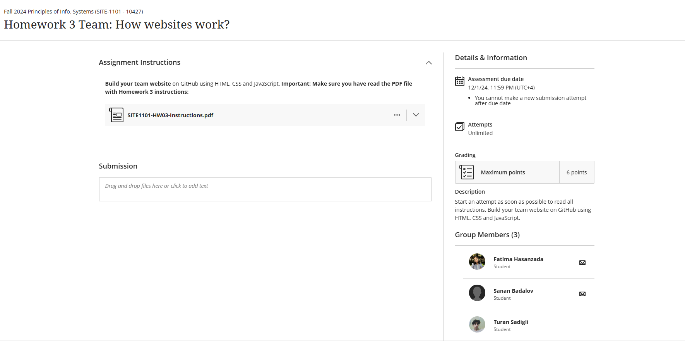

About Our Webpage Project
Overview
This webpage project was developed as part of our SITE 1101 course assignment. It showcases our understanding of HTML, CSS, and JavaScript, how we can apply them and displays our practical skills. We, as a group, designed this website accourding to instructions, which have been uploaded to the ADA's Blackboard: homework/assignments section.
Purpose
The purpose of this project is to illustrate our web development skills, applying what we have learned in Codecademy courses to create a visually appealing and interactive site.
What did we use?
- HTML: For structuring the webpage content.
- CSS: To add styles and make the website visually appealing.
- JavaScript: For interactivity, such as smooth scrolling and dynamic content.
Challenges Faced
During development, we encountered challenges like ensuring proper responsiveness, implementing smooth scrolling, and linking external resources. These obstacles helped us refine our debugging skills.
Conclusion
This project provided us with hands-on experience in web development. The project will be sent via Blackboard and will be graded after review by our Instructors. It was very nice experiment as a team to understand integration of HTML, CSS, and Javascript by practicing at the same time.